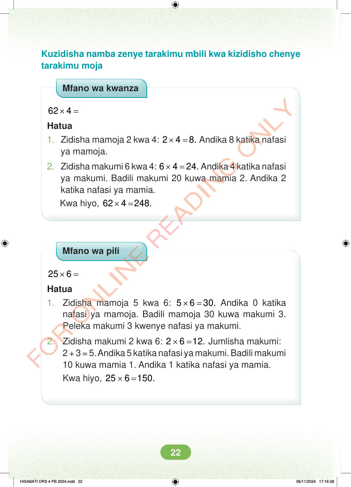

<!DOCTYPE html>
<html lang="sw-TZ"><head><meta charset="utf-8"><meta name="viewport" content="width=device-width,initial-scale=1">
<title>Hisabati: Kitabu cha Mwanafunzi Darasa la Nne</title>
<meta name="title-id" content="pg028_sec001"><meta name="page-section-id" content="29">
<link href="./content/tailwind_output.css" rel="stylesheet"><link href="./assets/libs/fontawesome/css/all.min.css" rel="stylesheet"><link href="./assets/fonts.css" rel="stylesheet">
<style>body{margin:0;background:#eef1ed}main{width:100%;display:flex;justify-content:center;padding:1rem 1rem 5rem;box-sizing:border-box}#content{width:100%;display:flex;justify-content:center}.pdf-page{position:relative;width:min(calc(100vw - 2rem),56rem);aspect-ratio:540.8980102539062/750.6610107421875;background:white;box-shadow:0 4px 24px #0002;overflow:hidden}.pdf-page img{position:absolute;inset:0;width:100%;height:100%;object-fit:fill}</style>
</head><body><main><h1 class="sr-only" id="page-heading">Ukurasa wa 28</h1><div id="content" class="opacity-0"><section role="article" data-section-type="pdf_accessible_page" data-section-id="pg028_sec001" aria-labelledby="page-heading" class="pdf-page"><p class="sr-only" data-id="pg028_gp001_tx001">Kuzidisha namba zenye tarakimu mbili kwa kizidisho chenye tarakimu moja Mfano wa kwanza × = 62 4 Hatua 1. Zidisha mamoja 2 kwa 4: × = 2 4 8. Andika 8 katika nafasi ya mamoja. 2. Zidisha makumi 6 kwa 4: × = 6 4 24. Andika 4 katika nafasi ya makumi. Badili makumi 20 kuwa mamia 2. Andika 2 katika nafasi ya mamia. Kwa hiyo, × = 62 4 248. Mfano wa pili × = 25 6 Hatua 1. Zidisha mamoja 5 kwa 6: × = 5 6 30. Andika 0 katika nafasi ya mamoja. Badili mamoja 30 kuwa makumi 3. Peleka makumi 3 kwenye nafasi ya makumi. 2. Zidisha makumi 2 kwa 6: × = 2 6 12. Jumlisha makumi: 2 + 3 = 5. Andika 5 katika nafasi ya makumi. Badili makumi 10 kuwa mamia 1. Andika 1 katika nafasi ya mamia. Kwa hiyo, × = 25 6 150. HISABATI DRS 4 PB 2024.indd 22 HISABATI DRS 4 PB 2024.indd 22 06/11/2024 17:16:38 06/11/2024 17:16:38</p></section></div></main><div class="relative z-50" id="interface-container"></div><div class="relative z-50" id="nav-container"></div><script src="./assets/offline-preloader.js"></script><script src="./assets/scorm.js"></script><script src="./assets/base.bundle.local.js"></script></body></html>